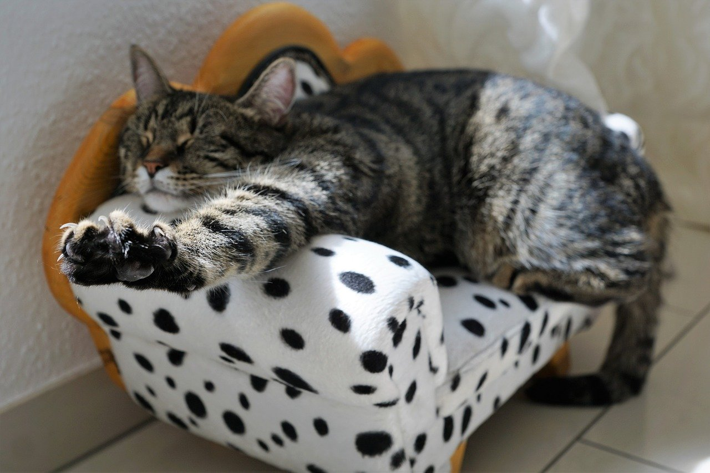

Profile
ประวัติส่วนตัว
ชื่อ-นามสกุล: กนิษฐา กิตยารักษ์
ชื่อเล่น: นิด
ภูมิลำเนา: 47/19 หมู่1 ต.นาป่า อ.เมือง จ.ชลบุรี 20000
ความสนใจ
งานอดิเรกที่ชอบ: อ่านหนังสือ ดูงานไอเดียต่าง ๆ สัมมนา เกมออนไลน์
ความสนใจ:
หนังสือ งานสัมมนา: การศึกษา อสังหาฯ ธุรกิจ การตลาด ขายออนไลน์ หุ้น การเกษตร เทคโนโลยี
pinterest : สถาปัตย์ ไอเดียการออกแบบ กราฟฟิค งานฝีมือ
สี: ฟ้า-เขียว ชมพู-ส้ม
Home
Profile
Friends